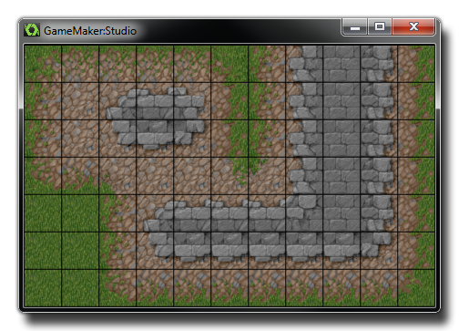
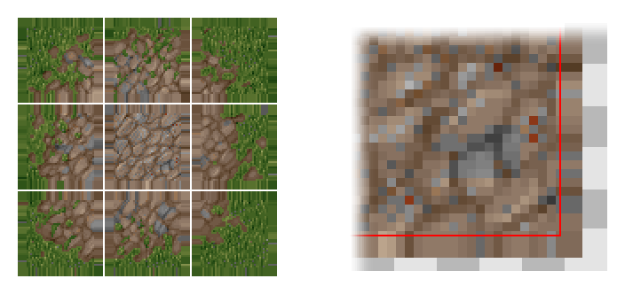

Designing Tiles
Tiles are a very important graphic resource for
your games, but their design and use can sometimes be
problematic.
Tiles are a graphic resource which can add colour, detail and
interest to your games with very little processing overhead due to
the fact that they have very few "built in" properties and do not
generally interact with any instances once placed in a room.
However, they do need to be prepared carefully before use,
especially if your target device is something other then the PC or
Mac, or if you are planning on scaling them up or down. Let's start
by looking at an image of a typical problem that can occur when
using tiles in your game and then having the view scaled:
 The image above
shows the kind of visuals you can expect to get if you zoom in on a
typical tileset that has been created with a space between tiles.
Now, most tiles are like this, with spaces around the edges, or
they are placed all together in one solid image where the tiles
actually touch each other, but unfortunately when zooming out and
(in particular) in, this can cause some really nasty issues to
solve if your not sure why it's happening in the first place. It's
also one of these bugs that you'll be convinced is GameMaker:
Studio's fault, after all... if it allows you to scale the
tiles, it should work! Well, it does work, but only if you know how
the graphics are drawn and prepare your resources accordingly.
Let's take a look at a couple of normal tile sets that you might
create: These are the
most common ways that people create tile sets - either all jammed
up together or with little spaces separating them out. Now for a
non-scaling game, this is normally fine and you can happily predict
what the device will render meaning you pretty much create the tile
set anyway you like. But... what happens if we scale them? What
does the device actually do? The image shown below illustrates how
tiles are mapped generally mapped by the device graphic drivers,
with the red line around the tile showing where the U,V coordinates
are mapped to (The letters "U" and "V" are used to describe the 2D
texture mesh because "X", "Y" and "Z" are already used to describe
room and object spatial coordinates): As you can see it picks the center of the texel
(a texel is just a pixel in a texture map) to map directly when
drawing the image in the room. Now 1:1, this is all well and
good... but what will happen when we scale this tile down? The
issue with scaling down is that when you shrink, the UVs also scale
down and try to fit into a more compressed space, but this
obviously can't happen, so graphics driver picks which pixels to
draw based on the available pixel centers. So, if we are "just"
moving into a new screen pixel then, because the graphics drivers
use the center of the pixel to decide what to draw with, it'll pick
a texel surrounding the tile, not a texel on the tile
itself. Shown
above is a tile being draw scaled down into 6 screen pixels, and
this shows that when you overlap a little into the next screen
pixel, the graphics driver has to make a choice to either drop that
texel, or it try and fill it with what it thinks is a valid texel.
Let's just say that in this case it decides to draw the overlapped
texel into the screen pixel, and, since it's now clearly outside
our tile it gets this pixel from either the next tile, or the
little bits of space you provided around the tiles, which means
that when it shrinks you'll get cracks between tiles "glitches" in
how they are drawn and this is where a lot of confusion arises...
Each graphics driver and device actually does this in its own way,
meaning that the results can be unpredictable and look terrible...
but if you're careful and plan ahead you can work around it.
With high end games if you draw from a single texture (not on a
texture page or texture atlas), you have the option of using a
texture mode called clamp and what this does is repeats the
last row of texels infinitely off into the distance, allowing you
to scale without problems as it forces the hardware to get the last
row of pixels no matter what. However, when using a texture pages
in GameMaker: Studio with tiles, you must "fake" this
yourself (for more information on texture pages see More About Backgrounds: Texture Pages).
 Shown above is a
"fixed" tile set and you can see it now has a repeated section
around each tile meaning that when the hardware overruns, it will
always pick the last texel from the tile rather than one of the
spaces or the tile after that! When importing these new tiles into
GameMaker, it is important to make sure you point GameMaker to the
tile inside the "smear" using the x and y offset options in
the background resource window as this means you will still get the
original tile while the device hardware can use the external area
if necessary. The space between tiles is optional and may help you
keep track of the tiles better within the tile sheet, but that's up
to you. The image below shows how this would finally look when
loaded into GameMaker: Studio:  Note: All the tiles used on this
page courtesy of Lost
Garden.
Note: All the tiles used on this
page courtesy of Lost
Garden.
© Copyright YoYo Games Ltd. 2018 All Rights Reserved